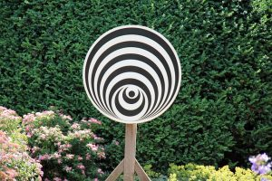

The following is an interview with the famed Continental philosopher Giorgio Agamben conducted by journalist Antonio Gnolio. Originally published in La Repubblica on May 15, 2016. the interview is translated from the Italian by Ido Govrin, whose bio is given at the end. It is translated with permission of La Repubblica.
“I believe in the link between philosophy and poetry. I have always loved the truth and the word.” – Giorgio Agamben
_________________________________________________________________________
Introduction by Antonio Gnolio: The Parisian years with Italo Calvino, Heidegger’s lectures and Rome of the ’60s. Giorgio Agamben, the philosopher who succeeded in broadening the thought between aesthetics and biopolitics, speaks.
Giorgio Agamben wrote a beautiful book. His books are always dense and bright (and unpredictable like the one recently dedicated to Pulcinella[1]). Their look is directed towards the remote past. It is the only way to intensify the present. Consider his latest work, What is Philosophy?[2]: What conceals an apparently obvious question? ”It is my conviction”, says Agamben…
that philosophy is not a discipline of which one can define a subject and boundaries (as Gilles Deleuze attempted to do) or, as it occurs in universities, pretend to trace a linear and hopefully progressive history. Philosophy isn’t an essence, but an intensity that can suddenly give life to any field: art, religion, economics, poetry, passion, love, even boredom. It resembles something more like the wind or the clouds or a storm: like these, it suddenly produces, shakes, transforms and even destroys the produced place, but just as unpredictably, it passes and disappears.
AG: You offer a volatile image of philosophy.
GA: I divide the field of experience into two main categories: the essences on one hand, and on the other hand, the intensity. As for the essence, it is possible to designate the boundaries, to define the themes and subject, to trace the cartography; the intensity, on the other hand, doesn’t have a unique place.
AG: Can it take place anywhere?
GA: The philosophy, the thought, is in this sense an intensity that can tend to, animate and cross any field. It shares this character of tension with politics. Even politics is an intensity; even politics, in contrast to what political experts believe, doesn’t have a unique place: it is evident not only in recent history, but suddenly also in religion, economics; and even aesthetics can acquire a decisive political intensity, and become an occurrence of hostility and strife. It goes without saying that intensities are more interesting than essences. If essences and disciplines – like life, eventually – remain inert, if they don’t reach a certain intensity, they atrophy into bureaucratic practices.
AG: Poetry can be an antidote against decaying into bureaucratic practice. You have often strengthened the link between philosophy and poetry – the same link Heidegger positioned at the centre of his reflections. What does this link consist of?
GA: I have always thought that philosophy and poetry aren’t two separate essences, but two intensities that tend to the unique field of language in two opposite directions: the pure sense and the pure sound. There’s no poetry without thought, just as there’s no thought without a poetic moment. In this sense, Hölderlin and Caproni are philosophers, just as some parts of Plato or Benjamin’s prose are pure poetry. If one drastically divides the two camps, I myself don’t know which one I belong to.
AG: An academic degree in law appears in your intellectual biography, but rather unusually, with a thesis dedicated to Simone Weil. How did this choice come about?
GA: I discovered Simone Weil in Paris in 1963 or ’64, when I bought by chance the first edition of the
Cahiers[3] at the Tschann bookstore in Montparnasse. I remained so dazzled by it that as soon as I returned to Rome I read it to Elsa Morante, who was conquered by it. Immediately I decided that I would dedicate my academic thesis in the philosophy of law to the political thought of Weil. At that time in Italy her thought was relatively unknown, and I knew much more about it than my supervisors whom I studied with when obtaining my degree.
AG: What impressed you in her thought?
GA: In particular, the critique of notions of personhood and the law that Weil developed in La personne et le sacré.[4] It was following this critique that I read Marcel Mauss’s essay on notions of personhood, and the relationship that intimately connects the juridical person and the theatrical (and then theological) mask of the modern individual became clear to me. Perhaps the critique of the law, which I never abandoned since the first volume of Homo Sacer[5], has its roots in Weil’s essay.
AG: Another root in the structure of your thought was Walter Benjamin.
GA: There are events and encounters in life that are too big to take in all at once. They, so to speak, don’t cease to escort us. The encounter with Benjamin – as that with Heidegger in Le Thor – is of this kind. Just as the theologians say that God continues to create the world in every instance, so these encounters are always ongoing. The debt I have for Benjamin is incalculable.
AG: Debt is a powerful word.
GA: It suffices here to refer solely to a methodological problem. It was he who taught me to derive strength from his apparently remote historical context, a determined phenomenon to restore life and act in the present. Without it, my incursions into fields as diverse as theology and law, politics and literature, would not have been possible. When one deeply haunt an author to such an extent, it produces phenomena that seem almost magical, but they are only the result of this intimacy. Thus it happened to me to discover Benjamin’s manuscripts, first in Rome, in a house of a friend from his youth, and then at the National Library in Paris (the manuscripts of the book about Baudelaire that Benjamin worked on in the final years of his life).
AG: In recent years you have intensified your call on “biopolitics.” Is this a concept we owe in large part to Michel Foucault?
GA: Certainly. But just as important to me was the problem of method in Foucault, namely the archeology. I’m convinced that these days the only way to access the present is through investigation of the past, the archeology. It should be made clear, as Foucault does, that archeological researches are not just the shadow that the interrogation of the present projects on the past. In my case, this shadow is often longer than that sought after by Foucault and probes fields such as theology and law, which Foucault hardly looked at. It certainly may turn out that the results of my research are disputed, but I hope at least that the purely archeological researches I developed in State of Exception,[6] The Kingdom and the Glory,[7] or in the book on oath,[8] help us understand the time in which we live.
AG: Another thinker who helped us understand the time in which we live was Guy Debord with his book The Society of the Spectacle,[9] a text that still helps us comprehend our present.
GA: I read it at the very year of its publication, in 1967. I became friends with Guy many years later, in the late ’80s. But I remember, in the moment of its first reading, as through our conversations, the sigh of relief seeing how his mind was absolutely free from the ideological prejudices that had compromised the fates of the movements. In ’68 and in the following years, the friends of the movements I visited proclaimed themselves, without fear or shame, and with an absolute abdication of the faculty of thinking, “Maoist,” “Trotskyist,” etc. Guy and I had arrived at the same lucidity; he from the tradition of the artistic avant-garde from which he came, myself from poetry and philosophy.
AG: Debord said about himself: “I’m not a philosopher, I’m a strategist.” In your opinion, what did he mean?
GA: Despite this affirmation you cite, I don’t think that for him there was any conflict between being a philosopher and a strategist. Philosophy always involves a problem of strategy since, even if it searches the eternal, it can do so only through a confrontation with its own time.
AG: In the years you lived in Paris you often saw Italo Calvino. What was your relationship with him like, with his idea of “illuminating geometries”?
GA: Next to the name Calvino, I want to mention that of Claudio Rugafiori, who, together with Calvino, I often saw in those years, because we worked together on a magazine project that was never carried out. The attempt was to define what we called among ourselves the “Italian Categories” – the pairs of concepts through which we sought to define the frameworks of Italian culture: “Architecture/Wandering,” “Tragedy/Comedy,” “Speediness/Nimbleness,” – the latter can literally be recalled in the American Lessons[10] of Calvino. I was fascinated by the way in which they worked in Italo’s mind and that of Claudio.
AG: What captivated you?
GA: The fact that they were two forms of purely analogical thought, which perceived resemblances and correspondences in a place where no one else knew to find them. The analogy is a form of knowledge that our culture increasingly pushed to the margins. As for Calvino’s geometric and scientific concept, I believe it is correct. His concept was rather an extraordinary form of analogical imagination, a kind of interpretative drive that allowed him, each time, to redraw the geography of literary knowledge.
AG: At the beginning you pointed out your friendship with Elsa Morante. What your relationship like with a woman of such complex character?
GA: The meeting and friendship with Elsa were for me in every sense decisive. Calvino once told me that it was possible to associate with Elsa only within a cult. Perhaps it was true, but on the condition that we specify that the object of the cult was not Elsa, but those gods – from Rimbaud to Simon Weil, from Mozart to Spinoza – that she researched and loved to share with friends. In this, Elsa was knowledgeable, brutally knowledgeable, and I believe that it conveyed to the lad that I was a bit of that uncompromising passion she had for poetry and truth. And since then I think that one cannot draw clear boundaries between literature and philosophy.
AG: I know that through Morante you were acquainted with Pasolini. You were part of a small but nice circle of participants in his The Gospel According to St. Matthew. What memory do you have from the experience on set?
GA: I remember the velocity of The Gospel: Pasolini almost never made himself repeat a scene and everybody spoke and moved as they wished. I believe this is the film he made most naturally, a film that never pretended to be realistic. The only long pause during the filming was my fault: in the last supper I found myself in front of enormous leavened loaves on the table and I had to remind Pier Paolo that for the Jewish Passover the bread had to be unleavened.
AG: You also mentioned your encounters with Heidegger and the seminars that you followed him in Le Thor in 1966 and then in 1968. What remained with you from these meetings?
GA: The encounter with Heidegger, as that with Benjamin, never finished. In my memory it is inseparable from the landscape of Provence, then still untouched by tourism. The seminar took place in the morning, in the garden of the small hotel that hosted us, but sometimes in a hut during one of the numerous excursions in the surrounding countryside. The first year we were five in total; in addition to the seminar there were shared meals and I took advantage of those in order to pose to Heidegger the questions that interested me the most: if he had read Kafka, if he knew Benjamin. But these are merely anecdotes.
AG: What do you think about the controversies aroused by the recent publication of the so-called “Black Notebooks”?
GA: These controversies rest on a misunderstanding of the definition of “anti-Semitism” and its use. The

way it is used today, this word designates something that has to do with the persecution and the extermination of the Jews. One does not have to use this word in order to describe someone that, even if his opinions about Jews are erroneous, has opinions that have nothing to do with these phenomena. And nonetheless one keeps on doing it and not solely concerning Heidegger. If every critical discourse on Judaism, even if reserved as in the diary notes, is condemned as anti-Semitic, it is equivalent to the exclusion of Judaism by language.
AG: One of the apparent principal focuses of your research was philology. In what way have you practiced it?
GA: Philology was always an essential part of my research. And not only because it occurred to me to do philological works in a technical sense – I think about the reconstruction of Benjamin’s book on Baudelaire and the editing Caproni’s posthumous poems – but because philology and philosophy, the love of words and the love of truth, cannot be separated in any way. The truth dwells in language and a philosopher who neglects this place would be a poor philosopher. Philosophers, like poets, are first and foremost the guardians of language, and this is a genuinely political task, especially in a time like ours, which tries by all means to blur and distort the meaning of words.
Ido Govrin is a multidisciplinary artist and scholar whose practice includes sound, installation, printmaking and text. Govrin has studied art and philosophy in Israel, Holland and Canada. He holds a B.A. in philosophy from Tel-Aviv University (2012), an M.F.A from the University of Toronto (2014) and is currently a Ph.D. candidate at Western University (Canada). He regularly exhibits across North America, Europe and Israel. In addition to his work as an artist, he has curated a series of five contemporary art exhibitions under the title Laptopia (2005-11) and the group exhibition Mother, Ravens! (2012). Between 2008 and 2012, he was the director of Musica Nova ensemble, which has been at the forefront of Israel’s experimental music scene since the 1980s. Govrin has released two full-length studio albums, Moraine (2010) and The Revisit (2011), as well as various other EPs. Since 2005, he has run the record label Interval Recordings.
________________________________________________________________________
[1] Agamben, Pulcinella ovvero Divertimento per li regazzi, Roma: Nottetempo, 2015.
[2] Agamben, Che cos’è la filosofia? Macerata: Quodlibet, 2016.
[3] Simon Weil, Cahiers I, Paris: Plon, 1940.
[4] An essay within the Weil’s Cahiers.
[5] Agamben, Homo sacer: Il potere sovrano e la nuda vita, Torino: Einaudi, 1995.
[6] Agamben, Stato di Eccezione, Torino: Bollati Boringhieri, 2003.
[7] Agamben, ll regno e la gloria. Per una genealogia teologica dell’economica e del governo, Torino: Bollati Boringhieri, 2009.
[8] Agamben, Il sacramento del linguaggio. Archeologia del giuramento, Torino: Bollati Boringhieri, 2008.
[9] Guy Debord, La sociéié du spectacle, Paris: Buchet-Chastel, 1967.
[10] Italo Calvino, Six Memos for the Next Millennium, Cambridge, MA: Harvard University Press, 1988.


Nice conceptualization of philosophy, but to be exact and fair – intensity is a Deleuzian concept, or at least its re-invigoration owes much to him.